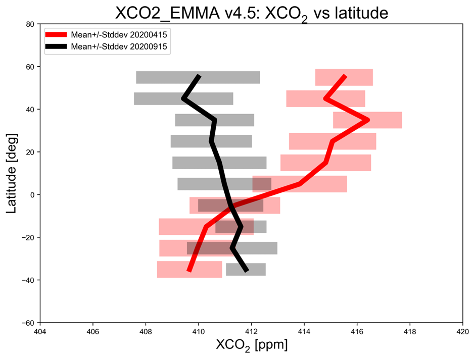
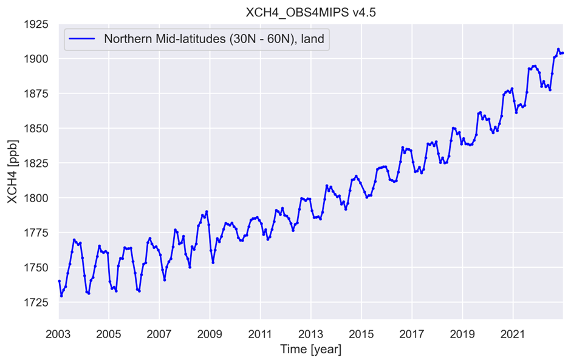
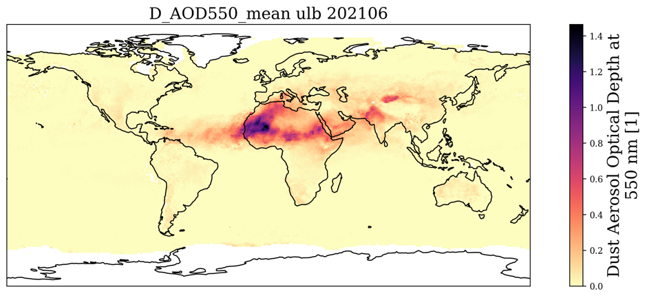
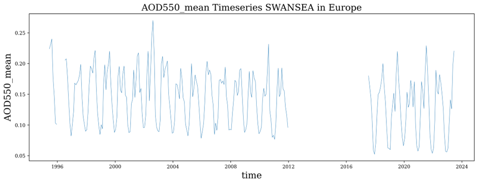
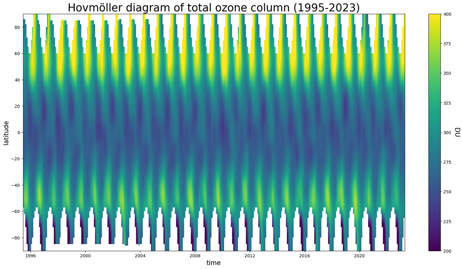

C3S Satellite-Observations (ECV) Atmospheric Composition#
PLEASE NOTE THAT THIS A DEVELOPMENT INSTANCE, THESE NOTE BOOKS ARE OFFICIALLY PUBLISHED ELSEWHERE
This Jupyter book is a sub-module of the core C3S training material, it is published here for reviewing the content prior to publication.
Satellite observations facilitate the monitoring of atmospheric composition, including greenhouse gases, aerosols, and ozone levels. This subsection discusses utilizing satellite data to analyze greenhouse gas concentrations, aerosol optical properties, and total ozone columns. Understanding atmospheric composition dynamics is essential for assessing air quality, understanding climate forcings, and studying atmospheric chemistry.
Greenhouse Gas Level 2 Products#
This is a Jupyter Notebook illustrating how to access, read and process Greenhouse Gas (GHG) carbon dioxide (CO2) and methane (CH4) data products as generated in the framework of the Copernicus Climate Change Service (C3S) project C3S2_312a_Lot2.

Greenhouse Gas Level 3 Products#
This is a Jupyter Notebook illustrating how to access, read and process Greenhouse Gas (GHG) carbon dioxide (CO2) and methane (CH4) data products as generated in the framework of the Copernicus Climate Change Service (C3S) project C3S2_312a_Lot2.

C3S Aerosol#
This first notebook provides a practical introduction to the C3S Aerosol properties gridded data from 1995 to present derived from satellite observations dataset. We give a short introduction to the ECV Aerosol Properties, which contains 4 total column variables: Aerosol Optical Depth (AOD), AOD of components (Fine Mode, Dust), and aerosol single scattering albedo (SSA) as a measure of aerosol absorption; and 2 vertically resolved variables: (dust) aerosol layer height and stratospheric aerosol extinction coefficient (vertical profiles). The algorithms and best practices for these aerosol properties have been developed within the ESA CLimate Change Initiative (CCI) and then were transferred for further extension and regular reprocessing + user support to the C3S. We start by downloading the data from the Climate Data Store (CDS) and then demonstrate three use cases for monthly mean single sensor datasets: plot a global mean map, calculate and plot a regional time series and calcculate and plot a regional multi-annual mean (“climatology”) and anomaly maps and time series.

Aerosol Multi-Sensor Record#
This second notebook extends the practical introduction of the first notebook to the C3S Aerosol properties gridded data from 1995 to present derived from satellite observations dataset. We create a full Climate Data Record by combining subsequent data record pieces of similar sensors. We start by downloading the data from the Climate Data Store (CDS) and then demonstrate three use cases for monthly mean multi-sensor data records: calculate and plot a regional data record, calculate and plot a regional multi-annual mean (“climatology”) and plot a regional anomaly time series.

Total Ozone Columns#
In this notebook we will show a practical example on how to download ozone products from the CDS within python. After retrieving the files we will also take a look at the content of the files by plotting the dataset. We will show two use cases, but it is obvious that more complex plots can be constructed in a similar way.
